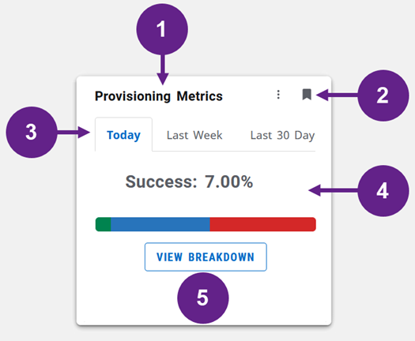
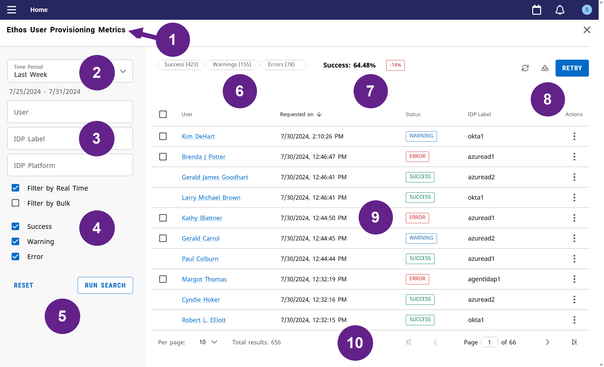

Provisioning Metrics
Provisioning Metrics is an Experience-supported application that enables administrators to access the functionality provided by Ethos User Provisioning (EUP) through Ellucian Experience.
The Ellucian Experience home page, or dashboard, includes one or more cards which provide access to specific features. Users can access and save cards to their home pages based on the configuration options you have defined in Ellucian Experience.
Provisioning Metrics is an Experience-supported application that has an Experience card for administrators, which enables them to monitor and manage provisioning processes in EUP. Institutions must configure the card to control who has access to it, and the Experience page that you can open from the card.
Grant EUP Metrics permissions
Enable the permissions that allow your users to view or retry metrics using the Provisioning Metrics.
Before you begin
You must have already defined the users and roles you need for Provisioning Metrics users.
See Add the roles in Ellucian Experience Setup for more information.
Procedure
Configure and enable the Provisioning Metrics Card
Institution administrators configure and enable the Provisioning Metrics card in Experience.
Before you begin
About this task
An administrator in Ellucian Experience is a user that has the required administrative role or roles in the system. Institutions define these roles in Experience Setup, and assign the roles to users as necessary. Experience also defines a set of administrative permissions, and institutions typically grant these permissions to the administrative role or roles, and can also grant the same permissions to individual administrators.
Experience administrators with the Card Management administrative permission can configure all Experience cards, including the EUP cards, on the card setup page that they can access from their Experience home page.
See Set up an Experience card for detailed information on how to access the card setup page and how to configure options on this page. This task complements this resource, in that it describes the specific configuration options that you can set for the EUP cards.
Procedure
Provisioning Metrics card layout
The Provisioning Metrics card displays information about provisioning metrics in a specific time frame and contains a View Breakdown button that opens the Ethos User Provisioning Metrics page.

| Component | |
|---|---|
| Card title (1) | Card controls (2) |
| Time period controls (3) | Metric overview data (4) |
| View breakdown button (5) | |
1—Card title
Ellucian sets the default title to Provisioning Metrics, as in this example, but administrators in your institution can configure this title as required.
2—Card controls
These controls enable administrators to remove the Provisioning Metrics card (bookmark icon) or change its position on the Ellucian Experience home page (the more icon, beside the bookmark icon).
3—Time frame controls
Use the tabs on the card to view information about provisioning metrics records in the corresponding time frame.
| Time Frame | Details |
|---|---|
| Today | The card displays data for the last 24 hours. |
| Last Week | The card displays data for the last 7 days. |
| Last 30 Days | The card displays data for the last 30 days. |
4—Metric overview data
This area of the card contains a graphical summary of how EUP processed provisioning requests in the selected time frame. It displays the percentage of successful requests, in terms of the total number of these requests. The card can also contain display a comparison indicator here that shows how the success rate compares to the rate for the previous period or time frame.
The system then displays a color-coded bar below these details, which shows the percentage of requests with a status of Success, Warning, or Error, again in the time frame selected. Each color in this bar corresponds to a specific status—green for Success, blue for Warning, and red for Error.
- If the selected time frame contains more than 50,000 records, the system will display only the top 500 records and show a warning message indicating that it failed to load all records for the selected time frame.
- If EUP did not process any requests in the selected time frame, the card contains a message to this effect instead of the percentages and the color bar.
5—View Breakdown button
To view details of recent provisioning requests, click the View Breakdown button to navigate to the Ethos User Provisioning Metrics page.
Ethos User Provisioning Metrics page
The Ethos User Provisioning Metrics page displays key information about the provisioning requests generated by EUP and includes several useful features that enable administrators to quickly search for, filter, and manage these requests.

| Component | |
|---|---|
| Page title (1) | Time Period list (2) |
| User, IDP Label, and IDP Platform fields (3) | Provisioning type and status filters (4) |
| Reset and Run Search buttons (5) | Status counts (6) |
| Success rate and comparison indicator (7) | Control icons and button (8) |
| Request list (9) | List controls (10) |
1—Page title
Experience displays the page title at the top of the page, in the secondary navigation bar. You can close the page and return to the Experience dashboard by clicking the close icon  at the right of the navigation bar.
at the right of the navigation bar.
2—Time Period list
- Today—Display requests generated on the current date.
- Last Week—Display requests generated in the last seven days.
- Last 30 Days—Display requests generated in the last 30 days.
- Custom—Display requests generated between a specific start date and an end date.
When you select the Custom option for the time filter, the system will display fields where you can enter or select the start and end dates. It will also display the current date, or date range, for the filter you have currently selected, below the Time Period list. So, for example, if you select Last Week and run a search, it will display the date range for the last seven days, as in the example above. EUP selects Today by default when you open the page.
3—Search fields
Use the search fields here to search the request list by user, by the label of the identity provider target, and the platform type of this target.
| Field | Description |
|---|---|
| User | Enter any part of the user name, or by first and last name of the user. |
| IDP Label | EUP can provision users to one or more identity provider targets, where each target has a label, which identifies the target, and a platform type, the third-party identity provider service associated with the target. See Create an identity provider target for details. It displays the label in the corresponding column the request list (9) and you can enter all or part of the label here to search requests by this label. |
| IDP Platform | The platform, or more precisely the platform type, of an identity provider target in EUP corresponds to one of the third-party identity provider services it currently supports:
You can filter the request list by platform type by entering the type in this field. This filter is case and space sensitive. Tip: Ellucian renamed Azure AD to Microsoft Entra ID in EUP documentation resources and its UIs in EUP Release 1.20.0. If you want to filter the list for requests generated before this release, enter azuread into the IDP Platform field. For requests generated on or after this release, enter Entra ID into this field. This ensures that the filter does not omit requests for this platform type because of the name change.
|
You must click Run Search (5) to search requests using these fields. Click Reset (5) to clear these fields.
4—Provisioning type and status filters
Use the check boxes in this part of the page to filter the request list by the provisioning type or by status.
- Filter by Real Time—Select this check box to filter the request list to only show those requests generated in near-real time, and not by the bulk provisioning process.
- Filter by Bulk—Select this check box to filter the request list to only show those requests generated by the bulk provisioning process, and not in near-real time.
- Success—Select this check box to show requests with a Success status in the request list, where the system processed the requests and provisioned the users.
- Warning—Select this check box to show requests with a Warning status in the request list, where the system processed the requests but could not provision users because of data issues.
- Error—Select this check box to show requests with an Error status in the request list, where system could not process the requests and did not provision any users.
The system selects all of the check boxes in this part of the page by default. If you clear one or more of these check boxes, remember to click the Run Search button (5) to update the list. You must select at least one of the provisioning type check boxes and one of the status check boxes. Experience will display an error message to this effect if you clear all of the provisioning type or status check boxes and click Run Search.
5—Reset and Run Search buttons
The Reset button resets the Time Period list, and the status check boxes, to the default values—Today (for the list) and all check boxes selected (for the statuses). It also clears the search field.
Click the Run Search button to apply the time period and statuses you have selected, together with any queries you have entered in the search fields. The system will update the page to display the requests that match your selections and queries.
6—Status counts
The number of requests that match the current search and filter criteria, for each status—Success, Warning, and Error. It will update these counts as you apply new criteria using the corresponding controls and the Run Search button.
7—Success rate and comparison indicator
The success rate, in bold, is the percentage of requests that match the current search and filter criteria which have a status of Success.
The comparison indicator shows how this success rate compares to the rate for the previous period or time frame, again as a percentage. The system applies conditional formatting to this value, red for negative values (that is, where the success rate has declined) and green for positive values, where the rate has increased.
8—Control icons and button
The refresh icon refreshes the list of provisioning requests, based on the current search and filter criteria. It does not reset these criteria, but will display any new requests that meet these criteria.
The download icon  generates a comma-separated values (CSV) file of the requests currently displayed in the list. See Export provisioning results for details.
generates a comma-separated values (CSV) file of the requests currently displayed in the list. See Export provisioning results for details.
The Retry button will retry the request you have selected. See Retry provisioning records for more information.
9—Request list
The list of provisioning requests that match the search and filter criteria you have currently selected. You can select specific requests and view key information for each request in the corresponding columns of this list.
| Column | Description |
|---|---|
| Selection column (no heading) | This column contains a check box for requests that have a status of Warning or Error. You can select the check box to select a request or clear it to deselect a request. When you select a request, you can then click the Retry button (8) to retry that request. |
| User | The user identified in the provisioning request, the user that EUP wants to provision to the provisioning target. The user name displayed in this column is a link that opens the User Details window, which contains the following sections:
|
| Requested on | The date and time of the request. |
| Status | The request status—Success, Warning, or Error. |
| IDP Label | The label of the identity provider target for the request. In EUP, the label identifies a deployed instance of a specific third-party Identity Provider (IdP). |
| Actions | This column contains the more icon  that opens the actions menu for the request. This menu will always include the Additional Details item, for all requests. It can also contain the Retry and Get Admin Config items, if you can retry that request. See Retry provisioning records for more information. that opens the actions menu for the request. This menu will always include the Additional Details item, for all requests. It can also contain the Retry and Get Admin Config items, if you can retry that request. See Retry provisioning records for more information.The Additional Details item opens the Additional Details window, which contains the following sections:
|

10—List controls
Experience displays a set of standard controls below the request list that enables users to navigate between pages in the list (from page to page, or to the first and last pages) and control the number of requests displayed on each page. The system will also display the current total number of requests next to the list, where you can select the number of results per page. This is the total number of requests that match the current search or filter criteria, and the system will update this total as you update these criteria.
Retry provisioning records
If Ethos User Provisioning cannot provision a user in an identity provider, you can retry the provisioning request again from the Ethos User Provisioning Metrics page in Experience. You can retry the same request up to three times, with the same payload as the original request or an updated payload.
About this task
Procedure
-
Retry one or more requests from the Ethos User Provisioning Metrics page.
- Select the check box in the selection column for the request, or requests, the column that contains one or more check boxes, and then click the Retry button, at the top of the page.
- Click the more icon in the Actions column for the request and select Retry from the context menu.
The system will only display the check box for a request in the selection column, or the Retry item in the context menu, for requests that you can retry, where the latest request for a user has a status of Warning or Error, as mentioned.When you retry a provisioning request, Ethos User Provisioning will attempt to provision the user identified in this request again. If you have changed the configuration, the retry request will automatically use a new payload, based on the updated configuration. If you have not changed the configuration, the retry request will use the same payload as the original request.
You must update the Ethos User Provisioning Metrics page by clicking the refresh icon , at the top of the page, to view the results of the retry attempt. The system will not update the page automatically.
When you refresh the page, Experience will update the request status and the entry it displays for the request on the page:- If EUP successfully processed the retry request and provisioned the user in the identity provider, it will update the status of the request to Success. As the status of the request is now Success, you cannot retry this request again. EUP will also update the information it displays in the Additional Details window for the request, which you can open using the more icon in the Actions column of the list. This window contains the Last Retried On and Retry Count sections, which contain the date of the last retry attempt and the number of retry attempts respectively, and EUP will update these values for every retry attempt, successful or not.
- If the system could not provision the user, it will update the status to Warning or Error. It will also update the Last Retried On and Retry Count sections with the values for the failed retry attempt. You can retry the request again, with the same payload or a new payload, to a maximum of three retry attempts.
Export provisioning results
Administrators can generate a comma-separated values (CSV) file from the Ethos User Provisioning Metrics page, which contains details about the provisioning requests that match the current search or filter criteria. They can then import this widely supported file format into any data management tool.
Procedure
-
Click the download icon , above the list, to generate a CSV file of the requests currently displayed in the list.
The system generates the CSV file that contains details about the requests currently displayed in the list, the requests that match the current search or filter criteria. Your browser will then download this file to the local folder or directory where it stores downloaded files.
Note: You can download up to 500 records at a time in the CSV file. To download the next set of 500 records, use the pagination controls to navigate to the desired page and download the records.The CSV file contains all of the information you can view for a request, both on the Ethos User Provisioning Metrics page and in the Additional Details window that you can open for a request using the more icon
in the Actions column on this page. This includes the payload of the request.However, the CSV file also includes the ID of the Ethos tenant associated with a request and a flag that indicates if the request was generated by a bulk provisioning pipeline job.